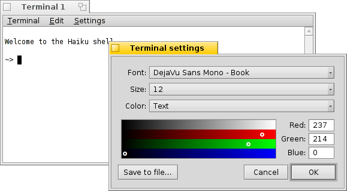
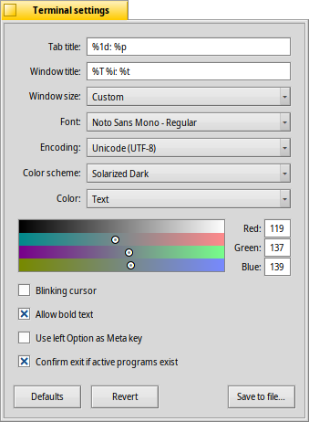

Terminal
Terminal
| Deskbar: | ||
| Location: | /boot/system/apps/Terminal | |
| Settings: | ~/config/settings/Terminal ~/config/settings/profile - adds/overrides defaults in /boot/system/settings/etc/profile ~/config/settings/inputrc - adds/overrides defaults in /boot/system/settings/etc/inputrc |
The Terminal is Haiku's interface to bash, the Bourne Again Shell.
Please refer to the topic on Scripting for a few links to online tutorials on working in the shell and also have a look at Haiku's commandline applications. Here, we'll concentrate on the Terminal application itself.
 Windows and tabs
Windows and tabs
You can open as many Terminals as needed, either each in its own window by simply launching more Terminals or with ALT N from an already running Terminal. Or you use Terminal's tabbed view and open more tabs with ALT T.
Double-clicking into the emtpy part of the tab bar opens a new tab; onto a tab opens a dialog to rename its title. There are several %-designated variables that are explained with a tooltip when you hover the mouse over the text field.
By default, %1d: %p, a tab shows the current directory and, separated by a :, the name of the currently running process (or -- if it's just bash running, probably idling). The screenshot above shows the first tab with a FTP session in the Desktop folder and a second tab idling at home.
Via the Terminal window's title can be edited in a similar way.
Right-clicking a tab shows a context menu to , or, like double-clicking, .
A Terminal window can be resized like any other window or you use the presets from the menu. ALT ENTER toggles fullscreen mode.
All the settings you change directly through the menu, like , , or are only kept for the current session. If you want to make permanent changes, you have to apply them in the panel.
Settings
opens a panel to configure the standard settings of a Terminal.
Most of the offered settings speak for themselves. Not entirely obvious though, the font size is set in the submenu of the popup menu.
Hover your mouse over the "formulas" for naming tab and window titles to get tooltips for the available variables.
You can choose pre-defined color schema like or or create a one by selecting which color you want to change (, , etc.) and then use the color picker below.
A few more options follow: you can have a and choose to .
if you work with certain UNIX software that relies on accessing an extended portion of the ASCII character set, like e.g. GNU Emacs and the GNU readline library.
Activate the checkbox to and you'll be warned when trying to close a Terminal window while an app is still being executed.
| let's you save different settings as separate profiles, which on double-click open an accordingly configured Terminal. | ||
| brings back the settings that were active when you opened the settings panel. | ||
| resets everything to default values. |
Keyboard shortcuts
You'll find a list of useful shortcuts in Shortcuts and key combinations.
Another nice feature that is more a key & mouse combination: When holding ALT a path or URL under the mouse pointer gets highlighted. A left-click opens the file/folder or website. A right-click opens a context menu to either or . Imagine you're in /MyData/source/haiku/ and have the path generated/objects/haiku/x86_gcc2/release/apps/stylededit/StyledEdit under the mouse pointer, the latter menu item will result in the combined, absolute path <deep breath>:
/MyData/source/haiku/generated/objects/haiku/x86_gcc2/release/apps/stylededit/StyledEdit.
If you hold down ALT SHIFT, only the path from beginning to where your mouse pointer sits will be highlighted.
By the way, right-clicking into the Terminal window will insert the clipboard. In combination with copying parts of highlighted paths, this can be used for speedy navigation of deep folder hierarchies.
Bash customization
Coming from Unix, there are countless possibilities to customize the bash itself. There are two files that are especially important to the user: profile and inputrc
Both files can be created in the /boot/home/config/settings/ folder and add or override the system defaults that are defined in /boot/system/settings/etc/.
profile
The profile is loaded every time you open a new Terminal. It sets all kinds of aliases and variables that will affect bash's behavior and appearance. You'll find many online resources that will detail all possibilities.
The Haiku/BeOS Tip Server has quite a few tips to get you started, for example:
There are more, have a look.
inputrc
The inputrc deals with keybindings. Since Haiku provides useful defaults, you probably don't have to mess with these more involved settings. If you do have special needs here, consult one of the many online resources, e.g. The GNU Readline Library.
Hints for working with the Terminal
Dragging a file or folder from a Tracker window into the Terminal will insert its path at the location of the cursor. Dragging with the right mouse button offers additional actions in a context menu:
Inserts the location of the file, same as drag & dropping with the left mouse button. Changes to the folder of the dragged file. Creates a link to the dragged file in the current working directory of the Terminal. Moves the dragged file into the current working directory of the Terminal. Copies the dragged file into the current working directory of the Terminal. You can open any file with its preferred application with the command open [filename]. This also works with the representation of the current (".") and parent ("..") folder which then open in a Tracker window. So, to open the current working directory, you type:
open .